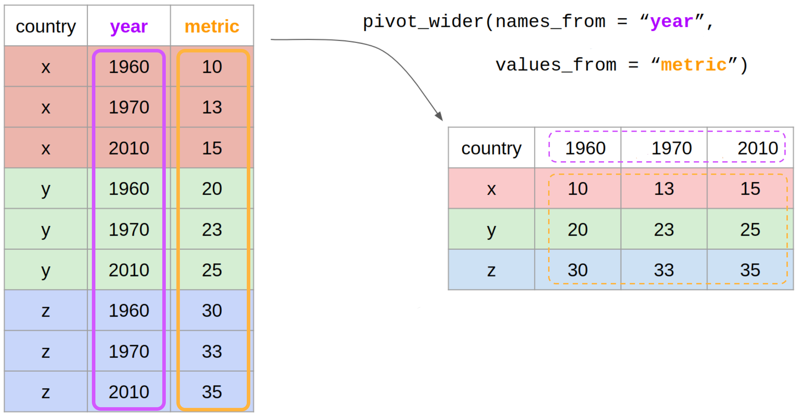

Tidying Data 🧹
MATH/COSC 3570 Introduction to Data Science
Grammar of Data Tidying
- OK. We are still in the stage of data wrangling. But here we are gonna tidy our data using another tidyverse package called tidyr.
Grammar of Data Tidying
Have data organised in an unideal way for our analysis
Want to re-organise the data to carry on with our analysis
The goal of tidyr is to help you tidy your data via
pivoting for going between wide and long data
separating and uniting character columns
clarifying how
NAs should be treatednesting and unnesting columns
- Suppose we have a data set that is untidy, and organised in an unideal way for our analysis.
- What tidyr is doing is not like dplyr, just filter rows or select columns, because it is kinda meaningless, because the data after filtering or selecting from the untidy data are still untidy.
- So our goal is to re-organise the data so that it is clean enough for being filtered or selected and for later data analysis.
- tidyr helps you tidy your data via
- pivoting for going between wide and long data
- separating and uniting character columns
- clarifying how
NAs should be treated. for example, do we wanna keep them or drop them, or fill in with some values. - nesting and unnesting columns
- We will go through the first three. You can check the tidyr page to learn more about its functionality.
Wide Data
To tidy your data, (1) figure out what the (column) variables and (row) observations are; (2) resolve one of two common problems:
. . .
One (column) variable spreads across multiple columns

customers <- read_csv("./data/sales/customers.csv")wider (\(2 \times 4\))
more columns than we want!
customers# A tibble: 2 × 4
customer_id item_1 item_2 item_3
<dbl> <chr> <chr> <chr>
1 1 bread milk banana
2 2 milk toilet paper <NA> - We may want one single column variable
itemshowing all purchased times.
Long Data
One (row) subject is scattered across multiple rows

longer (\(6 \times 3\))
more rows than we want!
# A tibble: 6 × 3
customer_id item_no item
<dbl> <chr> <chr>
1 1 item_1 bread
2 1 item_2 milk
3 1 item_3 banana
4 2 item_1 milk
5 2 item_2 toilet paper
6 2 item_3 <NA> We may want each row corresponds to one single customer, not one single purchased item.
Which data format we adopt depends on our own research question.
- If our data is untidy, to tidy our data, first, we get to figure out what the variables (column) and observations (row) are. Remember the definition of tidy data. each row is for one and only one observation, and each column is for one and only one variable.
- Once we know observations and variables, we need to resolve one of two common problems:
- One variable might be spread across multiple columns.
- One observation might be scattered across multiple rows.
- either problem is a reason why our data is not tidy.
pivot_longer() and pivot_wider()
To transform our data to the one we want, we use
pivot_longer()andpivot_wider().-
Starts with a data set,
pivot_longer()``lengthens” data, adding more rows and decreasing the number of columns.pivot_wider()``widens” data, adding more columns and decreasing the number of rows.
- To fix these problems, we’ll need the functions
pivot_longer()andpivot_wider() - pivot_longer() starts with a data set and add more rows to it. Make the data set longer
- pivot_wider() starts with a data set and add more columns to it. Make the data set wider
- To change the left data set to the right data set, we use pivot_longer(), because the transformed data set has more rows and will typically has less columns as well.
- To change the right data set to the left data set, we use pivot_wider(), because the transformed data set has more columns and will typically has less rows as well.
pivot_longer() and pivot_wider()

- the gif here illustrate the idea of pivot_longer() and pivot_wider() function.
Data: sales/customers.csv
customers <- read_csv("data/sales/customers.csv")wider (\(2 \times 4\))
more columns
customers# A tibble: 2 × 4
customer_id item_1 item_2 item_3
<dbl> <chr> <chr> <chr>
1 1 bread milk banana
2 2 milk toilet paper <NA> longer (\(6 \times 3\))
more rows by pivot_longer()
# A tibble: 6 × 3
customer_id item_no item
<dbl> <chr> <chr>
1 1 item_1 bread
2 1 item_2 milk
3 1 item_3 banana
4 2 item_1 milk
5 2 item_2 toilet paper
6 2 item_3 <NA> - And the original customers data is in this wider format, where I have one row per customer. We have two customers and so two rows in the data frame.
- and then we have individual columns for the items they bought. The first customer bought 3 items, bread, milk, banana and the second customer bought two items, milk and toilet paper, so the the item_3 column value is NA.
- But this data format may not be what we want.
- In fact, what we want to do for this particular example is to have it in a format where one row per customer per item, so I can do further analysis.
- so we wanna go from wider to longer format, because the format we want has more rows and less columns.
pivot_longer()
data: data framecols: columns to pivot into longer format (1960, 1970, 2010)
- So we are going to use a function pivot_longer().
- Like other functions in tidyverse, the first argument is again a data frame.
- then we give it the columns we want to pivot into the longer format

pivot_longer()
-
names_to: name of the column where column names of pivoted variables go (year)
- and then we give the argument [names_to] the name of the column (in the transformed longer data) where column names of pivoted variables (in the original wider data) go, which is a character string.
pivot_longer()
-
values_to: name of the column where data values in pivoted variables go (metric)
- and finally we give the argument [values_to] the name of the column (in the transformed longer data) where data values of pivoted variables (in the original wider data) go, which is also a character string.
- So basically we are constructing two new variables in the new longer data set, and we are going to give their name as a character string, so they can be placed in the headers for those columns.
customers \(\rightarrow\) purchases
customers# A tibble: 2 × 4
customer_id item_1 item_2 item_3
<dbl> <chr> <chr> <chr>
1 1 bread milk banana
2 2 milk toilet paper <NA> purchases <- customers |> pivot_longer(
# variables item_1 to item_3
# to be pivoted into longer format
cols = item_1:item_3,
# col name of the names of item_1:item_3
# item_1 item_2 and item_3
names_to = "item_no",
# col name of the values of item_1:item_3
values_to = "item"
)purchases# A tibble: 6 × 3
customer_id item_no item
<dbl> <chr> <chr>
1 1 item_1 bread
2 1 item_2 milk
3 1 item_3 banana
4 2 item_1 milk
5 2 item_2 toilet paper
6 2 item_3 <NA> In customers data,
Names item_1, item_2, item_3 are values of variable
item_noinpurchasesValues bread, milk, etc are values of variable
iteminpurchases
- Let’s see how the function actually works in the customers example.
- Suppose we start with the customers data set which is in a wider format.
- And we wanna pivot it into a longer format.
- the columns I wanna pivot are the ones that have information about the items that customers bought, which are item1, item 2, and item3.
- So I write item1:item3 (we can also use any helper function to select columns)
- OK Now, the column names item_1 item_2, item_3 should be in a new column in the transformed longer data set whose column name is called item_no.
- ANd the values in those three columns (the cells in the original data) should go into another new column in the in the transformed longer data set whose column name is called item that basically shows what the customers had purchased.
- So again the column names of the original wider data go into a new column called item_no
- and the values of the column names of the original wider data go into a new column called item.
- And I end up with a longer data set called purchases with 6 rows and 3 columns
Why Pivot?
- The next step of your analysis needs it.
- The new
purchasesdata set and thepricesdata can now be joined together with the common key variableitem.
prices <- read_csv("./data/sales/prices.csv")
prices# A tibble: 5 × 2
item price
<chr> <dbl>
1 avocado 0.5
2 banana 0.15
3 bread 1
4 milk 0.8
5 toilet paper 3 purchases |>
left_join(prices) #<<# A tibble: 6 × 4
customer_id item_no item price
<dbl> <chr> <chr> <dbl>
1 1 item_1 bread 1
2 1 item_2 milk 0.8
3 1 item_3 banana 0.15
4 2 item_1 milk 0.8
5 2 item_2 toilet paper 3
6 2 item_3 <NA> NA - Why do we want to pivot our data?
- Most likely, because the next step of your analysis needs it.
- Suppose we have another data set called prices as shown on the left that contains price of grocery items
- After pivoting our data, the new purchases data set and the prices data can now be joined together with the common key variable item.
- With the joined data set, we can further calculate total revenue for example.
pivot_wider()
data: data framenames_from: which column variable in the long format contains the what should be column names in the wide format (year)

pivot_wider()
data: data framevalues_from: which column variable in the long format contains the what should be values in the new columns in the wide format (metric)
purchases \(\rightarrow\) customers
purchases# A tibble: 6 × 3
customer_id item_no item
<dbl> <chr> <chr>
1 1 item_1 bread
2 1 item_2 milk
3 1 item_3 banana
4 2 item_1 milk
5 2 item_2 toilet paper
6 2 item_3 <NA> purchases |>
pivot_wider(
names_from = item_no,
values_from = item
) # A tibble: 2 × 4
customer_id item_1 item_2 item_3
<dbl> <chr> <chr> <chr>
1 1 bread milk banana
2 2 milk toilet paper <NA> - All right. In fact we can also go back from a longer data to a wider data, which is the original data set we start with.
-
data: data frame -
names_from: which column variable in the long format contains what should be column names in the wide format -
values_from: which column variable in the long format contains what should be (cell) values in the new columns in the wide format - Notice that item_no and item are not quoted because they are variables that exist in our data frame purchases.
- We don’t construct new variables as we do when creating a data set in a longer format.
- OK. That’s pivoting, changing data set from wider to longer, or longer to wider format.
separate()
-
separate()pulls apart one column into multiple ones, by splitting wherever a separator character appears. - By default
separate()splits values wherever it sees a character that isn’t a number or letter.
# number of TB cases documented by WHO
tidyr::table3# A tibble: 6 × 3
country year rate
<chr> <dbl> <chr>
1 Afghanistan 1999 745/19987071
2 Afghanistan 2000 2666/20595360
3 Brazil 1999 37737/172006362
4 Brazil 2000 80488/174504898
5 China 1999 212258/1272915272
6 China 2000 213766/1280428583table3 |>
separate(col = rate,
into = c("cases", "population"))# A tibble: 6 × 4
country year cases population
<chr> <dbl> <chr> <chr>
1 Afghanistan 1999 745 19987071
2 Afghanistan 2000 2666 20595360
3 Brazil 1999 37737 172006362
4 Brazil 2000 80488 174504898
5 China 1999 212258 1272915272
6 China 2000 213766 1280428583- Now let’s see how split or combine character columns
-
separate()pulls apart one column into multiple columns, by splitting wherever a separator character appears. - By default,
separate()splits values wherever it sees a character that isn’t a number or letter. - Example is here. Here we have a data set called table3.
- Note that its column rate is of type character, having a form some number divided by some number.
- In fact, the rate is computed as the total number of cases divided by the population size, and the rate variable actually contains two types of information.
- So we can separate rate into two columns, one for cases, the other for population.
- In the separate() function, we specify the column we want to split, which is rate, then in the into argument, we put the column names of the new splitted columns.
- And you see the separate() function automatically choose the slash “/” to be the separator that separate the two numbers.
- Use type_convert() to convert data type.
separate()
## explicitly specify separator
table3 |>
separate(
rate,
into = c("cases", "population"),
sep = "/"
)# A tibble: 6 × 4
country year cases population
<chr> <dbl> <chr> <chr>
1 Afghanistan 1999 745 19987071
2 Afghanistan 2000 2666 20595360
3 Brazil 1999 37737 172006362
4 Brazil 2000 80488 174504898
5 China 1999 212258 1272915272
6 China 2000 213766 1280428583## convert to better data types (chr to int)
table3 |>
separate(
rate,
into = c("cases", "population"),
convert = TRUE
)# A tibble: 6 × 4
country year cases population
<chr> <dbl> <int> <int>
1 Afghanistan 1999 745 19987071
2 Afghanistan 2000 2666 20595360
3 Brazil 1999 37737 172006362
4 Brazil 2000 80488 174504898
5 China 1999 212258 1272915272
6 China 2000 213766 1280428583- And of course, you can explicitly specify your separator to split the column using the argument sep.
- And the separate() function is conservative, meaning that it leaves the type of the column as it is. So the new cases and population variables are both character types too.
- If we want them to be numeric type, we can add convert = TRUE. The function will try to find an appropriate data type for the variables. Here they are all integers.
unite()
-
unite()is the inverse ofseparate(): it combines multiple columns into a single column.
tidyr::table5# A tibble: 6 × 4
country century year rate
<chr> <chr> <chr> <chr>
1 Afghanistan 19 99 745/19987071
2 Afghanistan 20 00 2666/20595360
3 Brazil 19 99 37737/172006362
4 Brazil 20 00 80488/174504898
5 China 19 99 212258/1272915272
6 China 20 00 213766/1280428583## default separator is "_"
table5 |>
unite(col = "long_year",
century, year)# A tibble: 6 × 3
country long_year rate
<chr> <chr> <chr>
1 Afghanistan 19_99 745/19987071
2 Afghanistan 20_00 2666/20595360
3 Brazil 19_99 37737/172006362
4 Brazil 20_00 80488/174504898
5 China 19_99 212258/1272915272
6 China 20_00 213766/1280428583-
unite()is the inverse ofseparate(): it combines multiple columns into a single column. - This table5 has two columns, century and year, which is kinda redundant.
- So we can combine the two columns into one single column.
- To combine them, we use the unite() function. We specify the new single column name in the col argument called “long_year”, followed by the columns to unite, century and year.
- By default, the two columns will be combined with the separator “_“.
unite()
-
unite()is the inverse ofseparate(): it combines multiple columns into a single column.
# separator is "*"
table5 |>
unite(col = "long_year",
century, year,
sep = "*")# A tibble: 6 × 3
country long_year rate
<chr> <chr> <chr>
1 Afghanistan 19*99 745/19987071
2 Afghanistan 20*00 2666/20595360
3 Brazil 19*99 37737/172006362
4 Brazil 20*00 80488/174504898
5 China 19*99 212258/1272915272
6 China 20*00 213766/1280428583# separator is ""
table5 |>
unite(col = "long_year",
century, year,
sep = "")# A tibble: 6 × 3
country long_year rate
<chr> <chr> <chr>
1 Afghanistan 1999 745/19987071
2 Afghanistan 2000 2666/20595360
3 Brazil 1999 37737/172006362
4 Brazil 2000 80488/174504898
5 China 1999 212258/1272915272
6 China 2000 213766/1280428583- As separate(), you can use other separators using the “sep” argument.
- When unite(), always character
- Use type_convert() to convert data type.
Missing Values
Explicitly: flagged with
NAor other character/string representing a missing value.Implicitly: simply not present in the data.
# A tibble: 7 × 3
yr qtr ret
<dbl> <dbl> <dbl>
1 2015 1 1.88
2 2015 2 0.59
3 2015 3 0.35
4 2015 4 NA
5 2016 2 0.92
6 2016 3 0.17
7 2016 4 2.66Row 4: The stock return for the 4th quarter of 2015 is explicitly missing
Row 5: The stock return for the 1st quarter of 2016 is implicitly missing
- OK let’s spend a little time talking about missing values.
- Missing values can be Explicitly missing, meaning that they are flagged with
NAor other character/string representing a missing value. - Or missing values can be Implicitly missing: meaning that they are simply not present in the data.
- Suppose we have a stocks data with variable, tear, qtr, and return.
- The return for the fourth quarter of 2015 is explicitly missing, because the cell where its value should be instead contains NA.
- The return for the first quarter of 2016 is implicitly missing, because it simply does not appear in the dataset.
pivot_wider() Make Implicit Values Explicit
An explicit missing value is the presence of an absence.
An implicit missing value is the absence of a presence.
stocks |>
pivot_wider(names_from = yr, values_from = ret)# A tibble: 4 × 3
qtr `2015` `2016`
<dbl> <dbl> <dbl>
1 1 1.88 NA
2 2 0.59 0.92
3 3 0.35 0.17
4 4 NA 2.66- So basically, An explicit missing value is the presence of an absence; an implicit missing value is the absence of a presence.
- One way to make implicit missing values explicit is to make the data set wider by putting years in the columns.
- Each year is supposed to have 4 quarters, 2016 has no first quarter and so has no return value, so we got an NA here.
complete(): Making Missing Values Explicit
stocks# A tibble: 7 × 3
yr qtr ret
<dbl> <dbl> <dbl>
1 2015 1 1.88
2 2015 2 0.59
3 2015 3 0.35
4 2015 4 NA
5 2016 2 0.92
6 2016 3 0.17
7 2016 4 2.66stocks |>
complete(yr, qtr)# A tibble: 8 × 3
yr qtr ret
<dbl> <dbl> <dbl>
1 2015 1 1.88
2 2015 2 0.59
3 2015 3 0.35
4 2015 4 NA
5 2016 1 NA
6 2016 2 0.92
7 2016 3 0.17
8 2016 4 2.66- Another way to make implicit missing values explicit is to use the complete() function.
- complete() takes a set of columns, and finds all unique combinations. It then ensures the original data set contains all those values, filling in explicit NAs where necessary.
- So here we find all unique combinations of year and quarter, and because there is no year 2016 and first quarter in the original data set, its return is NA.
fill(): Fill in Missing Values
trt_data# A tibble: 4 × 3
person treatment result
<chr> <dbl> <dbl>
1 Derrick Whitmore 1 7
2 <NA> 2 10
3 <NA> 3 9
4 Katherine Burke 1 4trt_data |>
fill(person)# A tibble: 4 × 3
person treatment result
<chr> <dbl> <dbl>
1 Derrick Whitmore 1 7
2 Derrick Whitmore 2 10
3 Derrick Whitmore 3 9
4 Katherine Burke 1 4fill() will find the most recent or the last observation that is not a missing value.
- Sometimes when a data source has primarily been used for data entry, missing values indicate that the previous value should be carried forward:
- You can fill in missing values with fill(). It takes a set of columns where you want missing values to be replaced by the most recent non-missing value. (sometimes called last observation carried forward).
- Like this treatment data set, the fill() function will find the most recent or the last observation that is not a missing value, which is Derrick, and the two missing values are replaced with Derrick.

17-tidyr
In lab.qmd ## Lab 17 section,
Import
trump.csv. Call ittrump_dataas below on the left.Use
pivot_longer()to transformtrump_datainto the data settrump_longeron the right.
trump_data# A tibble: 2,702 × 4
subgroup date approval disapproval
<chr> <date> <dbl> <dbl>
1 Voters 2020-10-04 44.7 52.2
2 Adults 2020-10-04 43.2 52.6
3 Adults 2020-10-03 43.2 52.6
4 Voters 2020-10-03 45.0 51.7
5 Adults 2020-10-02 43.3 52.4
6 Voters 2020-10-02 44.5 52.1
# ℹ 2,696 more rowstrump_longer <- ______________
pivot_longer(
cols = ____________,
names_to = _______________,
values_to = _______________
) # A tibble: 5,404 × 4
subgroup date rating_type rating_value
<chr> <date> <chr> <dbl>
1 Voters 2020-10-04 approval 44.7
2 Voters 2020-10-04 disapproval 52.2
3 Adults 2020-10-04 approval 43.2
4 Adults 2020-10-04 disapproval 52.6
5 Adults 2020-10-03 approval 43.2
6 Adults 2020-10-03 disapproval 52.6
# ℹ 5,398 more rowsBONUS 💹: Use trump_longer to generate a plot like the one below.

Pivoting
pd.melt()
pd.pivot()
pd.melt()
import numpy as np
import pandas as pdcustomers = pd.read_csv('./data/sales/customers.csv')
print(customers) customer_id item_1 item_2 item_3
0 1 bread milk banana
1 2 milk toilet paper NaNpurchases = customers.melt(id_vars=['customer_id'],
value_vars=['item_1', 'item_2', 'item_3'],
var_name='item_no', value_name='item')
print(purchases) customer_id item_no item
0 1 item_1 bread
1 2 item_1 milk
2 1 item_2 milk
3 2 item_2 toilet paper
4 1 item_3 banana
5 2 item_3 NaNpd.pivot()
print(purchases) customer_id item_no item
0 1 item_1 bread
1 2 item_1 milk
2 1 item_2 milk
3 2 item_2 toilet paper
4 1 item_3 banana
5 2 item_3 NaNprint(purchases.pivot(index = "customer_id", columns = "item_no", values = "item"))item_no item_1 item_2 item_3
customer_id
1 bread milk banana
2 milk toilet paper NaN